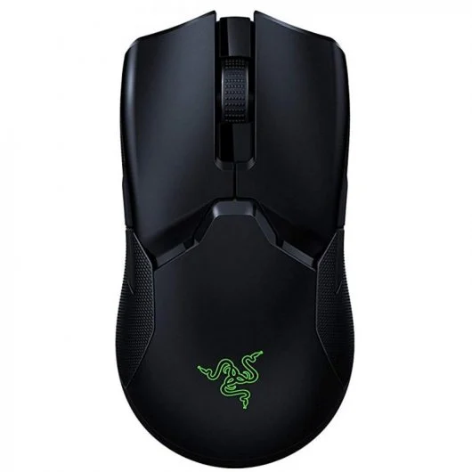
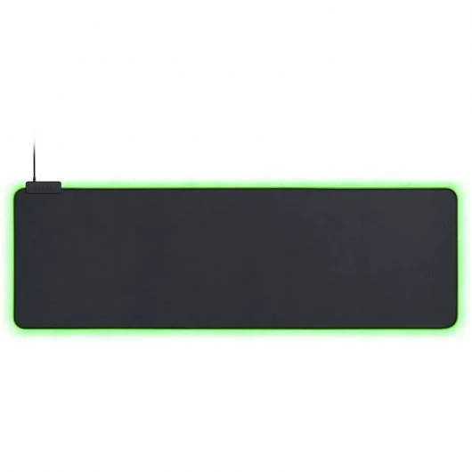
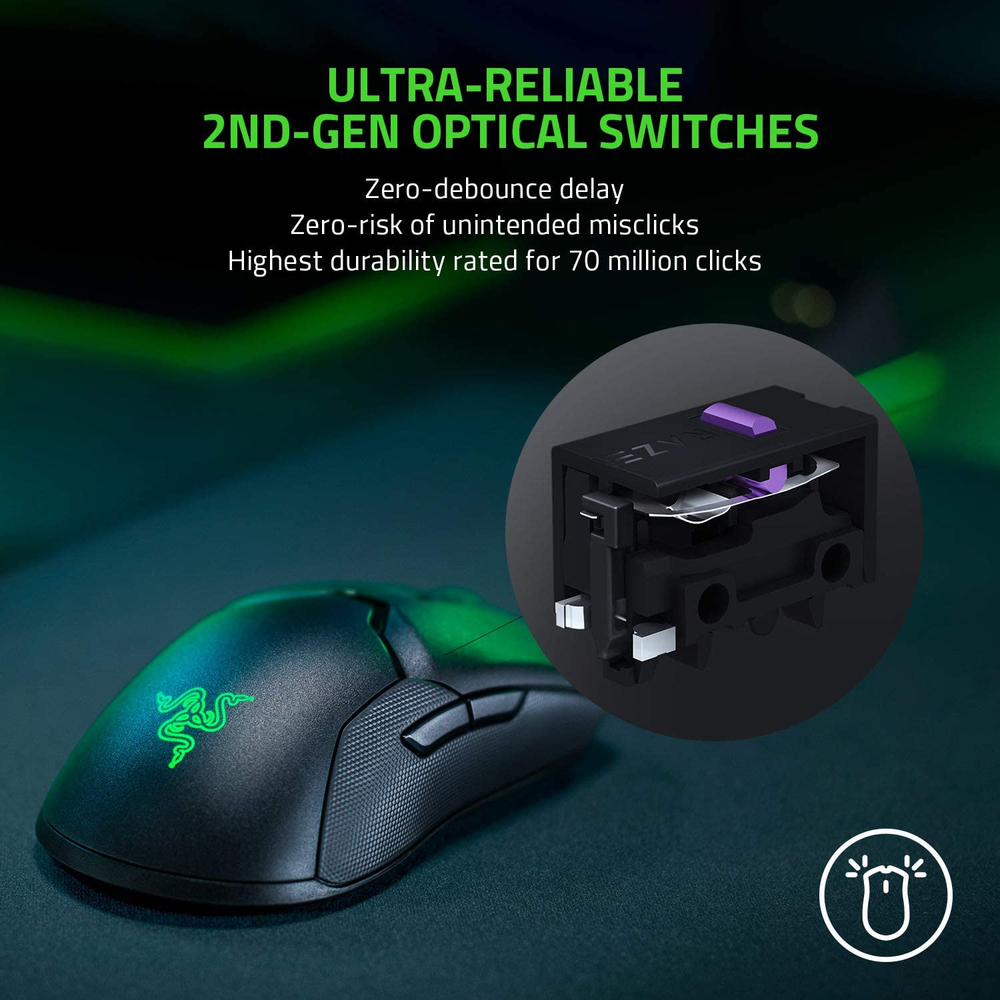
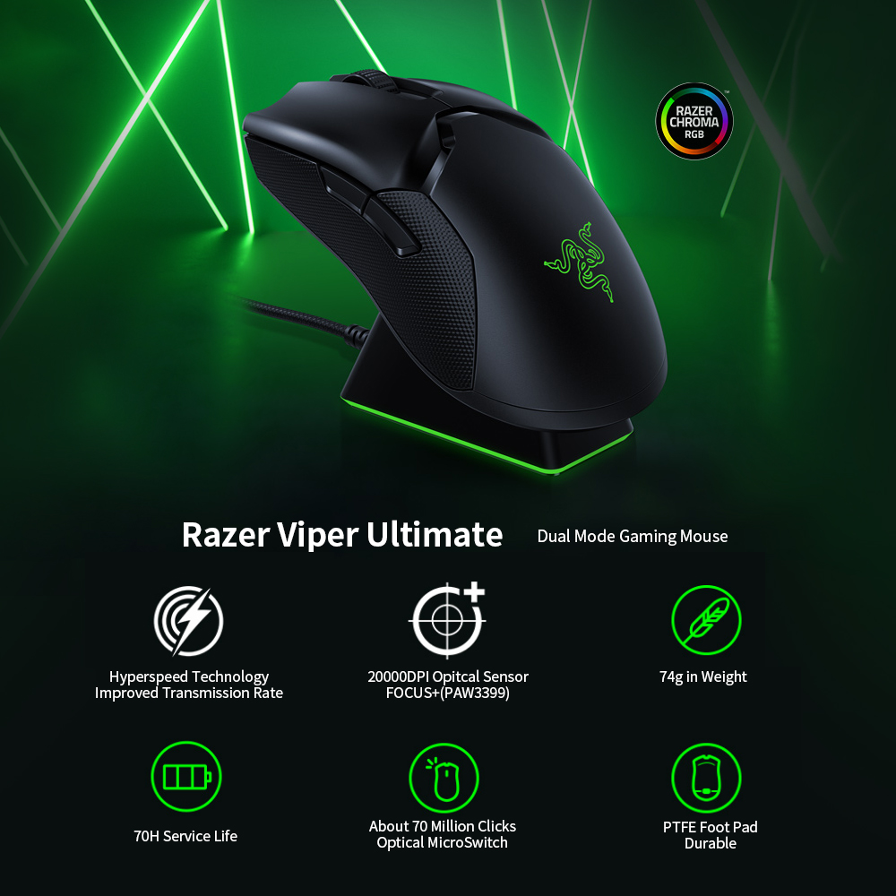

Razer Goliathus Extended Chroma Alfombrilla Gaming  No seleccionar Seleccionar (67,99€)
 
·Tecnología inalámbrica Razer Hyperspeed: Al ser un 25 % más rápida que cualquier otra tecnología inalámbrica, ni siquiera te darás cuenta de que no estás usando cables gracias a su transmisión de alta velocidad, su baja latencia de clics y su constante cambio de frecuencia hasta en los entornos más ruidosos y saturados de datos. ·Sensor óptico Razer Focus+: Nuestro nuevo y mejorado sensor es el líder del mercado con sus 20 000 PPP y una precisión de resolución de un 99,6 %, que garantiza que se registre perfectamente hasta el más mínimo movimiento de tu ratón inalámbrico. Equipado con funciones inteligentes, el sensor es ahora aún más preciso, otorgándote un nivel de precisión con el que podrás acertar esos disparos ganadores. ·Switch óptico para ratón Razer: Los switches de este ratón inalámbrico, que utilizan un haz de infrarrojos para registrar cada clic, se activan con un tiempo de respuesta de 0,2 milisegundos, tiempo líder del mercado. Al no requerir contacto físico, esta activación elimina la necesidad del retraso antirrebotes, con lo que nunca registrará pulsaciones involuntarias, lo que te proporciona un control aún más preciso y una ejecución perfecta. ·Diseño ligero de 74g: Disfruta de un control más rápido y fluido con el ratón inalámbrico para juegos más liviano del mercado. Con un peso total de 74 g, no compromete la robustez de su diseño ambidiestro. ·70 horas de duración de batería: Una eficiencia energética inalámbrica mejorada hace que funcione a un rendimiento máximo durante hasta 70 horas seguidas: cárgalo una vez a la semana para disfrutar de 10 horas de juego diario. ·5 perfiles de memoria integrada: Lleva tu configuración a cualquier parte y prepárate para la batalla rápidamente. Activa hasta 5 perfiles de configuración en la memoria integrada o los ajustes personalizados mediante almacenamiento en la nube. ·8 botones programables: Los 8 botones programables se pueden configurar íntegramente con Razer Synapse 3 y te permiten acceder a macros y a funciones secundarias para que puedas ejecutar más movimientos con facilidad. ·Base de carga para ratón Razer Chroma: Añade más personalidad a tu estación de combate con una base de carga eficiente que se integra sin problemas con el resto de tus dispositivos compatibles con Razer Chroma. (Base de carga no incluida) ·Base del ratón compuesta en un 100 % PTFE: Disfruta de un movimiento suave sobre cualquier superficie con una base fabricada con el PTFE (teflón) más puro y de mayor calidad, un material que se usa en las sartenes antiadherentes. (Base de carga no incluida)
·Sensor óptico Focus+ de 20 000 PPP reales con un 99,6 % de precisión de resolución ·Hasta 650 pulgadas por segundo (IPS)/50 G de aceleración ·Personalización avanzada de la distancia de elevación/apoyo ·Tecnología inalámbrica HyperSpeed ·Ocho botones programables de forma independiente ·Switches ópticos para ratones Razer™ con una duración de hasta 70 millones de clics ·Diseño ambidiestro real ·Rueda de desplazamiento táctil especial para juegos ·Ajustes inmediatos de sensibilidad (niveles predeterminados: 400/800/1600/2400/3200) ·Memoria híbrida integrada y almacenamiento en la nube (4+1 perfiles) ·Compatible con Razer Synapse 3 ·Iluminación Razer Chroma™ con 16,8 millones de colores reales personalizables ·Sincronización de colores entre dispositivos ·Modo inalámbrico y con cable ·Dongle USB 2,4 GHz ·Cable Speedflex de 1,8 m/6 pies para cargarlo y usarlo con cable ·Compatible con base de carga del ratón Razer (Se vende por separado) ·Duración de la batería: 70 h aproximadamente (sin iluminación) (la duración de la batería depende de la configuración de uso) ·Tamaño aproximado: 126,7 mm/4,99 pulgadas (largo) x 66,2 mm/2,61 pulgadas (ancho) x 37,8 mm/1,49 pulgadas (alto) ·Peso aproximado: 74 g/2,61 oz (sin el cable) ·Compatible con Xbox One para entrada básica